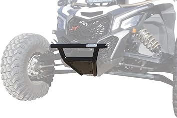
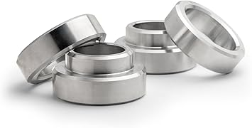

May 2026
If you've been researching stagupgrades lately, you know the market changed a lot in 2026. New options, shifting prices, and plenty of noise to cut through.
→ #5 — KEMIMOTO Universal UTV Roll Cage Organizer Upgrade Zipper Rear Storage Bag — Top rated

→ #2 — STIMULATER 4500LB ATV Winch with Synthetic Rope Wireless Remote Wired Contr — Top rated
→ #4 — Winch Cable Hook Stopper Rubber Winch Stopper for Wire Synthetic Rope with — Highly reviewed
→ #1 — BETOOLL Upgraded Adjustable Pair UTV Side Mirror Set 1.75 or 2inch Roll Bar — Top rated

→ #3 — ZIDIYORUO Anti-Vibration UTV Phone Mount Heavy Duty Full Protection SXS Pho — Great value
Not measuring — "It looked bigger online" is the #1 return reason for stagupgrades. Measure twice.
Trusting fake reviews — Look for reviews with photos and specific details. Generic praise is often planted.
Going with the cheapest option — Budget stagupgrades cut corners. Spending 20% more often gets something that lasts 3x longer.
Skipping negative reviews — A 4.5-star product with durability complaints tells you more than a 5-star product with 8 reviews.
The stagupgrades space keeps improving, and 2026 is a solid time to buy. See our full rankings at stagupgrades.com for side-by-side comparisons.